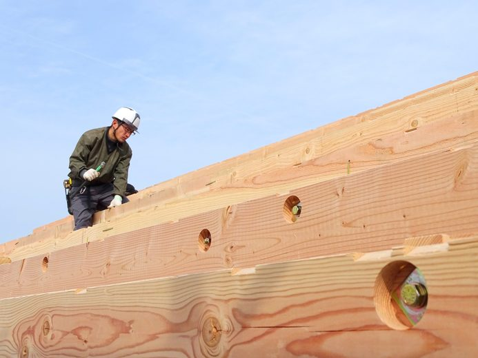

注文住宅の住宅ローンは、家が完成して引き渡しを受ける日に出るのが基本です。
ところが、工事代金の支払いは、着工や上棟のときにもあります。
私が資金計画でいちばん時間をかけて説明するのが、この間のお金の用意です。

柱と梁が組み上がると、工事の途中の支払い（中間金）の時期になります。
住宅ローンが、完成まで出ない理由
住宅ローンは、土地と建物を担保にして借りるお金です。
建物は、完成して登記ができるまで担保になりません。
そのため、注文住宅の住宅ローンは、引き渡しの日にまとめて出るのが基本になります。
この日に、住宅ローンが出ます
工事の請負契約書に書かれているので、契約の前に必ず見てください。
この例では、引き渡しの日より前に、合わせて2,100万円を払うことになります。
土地から買う場合は、土地の代金も建物の完成より先に払います。
完成前のお金を用意する、3つの方法
1. 自己資金で払う
手元の預金や、親からの援助で払う方法で、借入がないので利息もかかりません。
ただし、着工金と中間金を合わせると数百万円から2,000万円ほどになるので、全部を自己資金で払える方は多くありません。
2. つなぎ融資を使う
住宅ローンとは別に、完成までの間だけ借りるお金です。
家が完成して住宅ローンが出た日に、そのお金でまとめて返します。
工事中に払うのは、利息だけのことが多いです。
金利は、住宅ローンより高く決められています。
また、銀行によっては、つなぎ融資を扱っていません。
3. 分割融資を使う
住宅ローンそのものを、土地の決済・着工・上棟などに分けて出してもらう方法です。
金利は住宅ローンと同じですが、出た分から返済が始まるので、工事中は家賃とローンの返済が重なります。
分割融資を扱うかどうかと、何回まで分けられるかは、銀行によって違います。
つなぎ融資の費用の目安
つなぎ融資にかかる費用は、利息・事務手数料・印紙代の3つです。
上の例で、着工金と中間金をつなぎ融資で借りた場合を計算しました。
金利と手数料は、金融機関によって違います。
印紙代は、借入額が1,000万円を超えて5,000万円までの契約書の額です。電子契約なら要りません。
借りる期間が長くなるほど、利息は増えます。
工事の期間が延びると、その分の利息もかかります。
 土地の契約で要る現金住宅ローンが間に合わない
土地の契約で要る現金住宅ローンが間に合わない土地の契約の日の話です。
銀行を決める前に、確かめる3つのこと
- つなぎ融資か分割融資を、扱っているか
- 何回まで出してもらえるか（土地の代金・着工金・中間金）
- 利息を払う時期（借りるときに差し引くか、完成のときにまとめて払うか）
住宅ローンの金利だけを比べて銀行を決めると、あとで着工金が払えないことがわかる場合があります。
事前審査を申し込むときに、工務店の支払いの時期と金額を銀行に伝えてください。
その表があれば、銀行に「いつ・いくら要るか」をそのまま伝えられます。
申し込む前の準備です。
よくある質問
つなぎ融資とは何ですか？
住宅ローンが出る前に払う着工金や中間金を、一時的に借りるためのお金です。
家が完成して住宅ローンが出た日に、まとめて返します。
工事中に払うのは、利息だけのことが多いです。
つなぎ融資と分割融資は、どう違いますか？
つなぎ融資は、住宅ローンとは別に借りる短い期間の借入で、金利は住宅ローンより高めです。
分割融資は、住宅ローンそのものを着工時・上棟時などに分けて出してもらう方法で、金利は住宅ローンと同じですが、出た分から返済が始まります。
つなぎ融資には、どんな費用がかかりますか？
借りている期間の利息、事務手数料、契約書に貼る印紙代がかかります。
工事代金3,000万円で着工金と中間金を900万円ずつ借りる例では、年2.0％で合計約18万円です。
金利と手数料は金融機関によって違います。
つなぎ融資を使わずに済む方法はありますか？
着工金と中間金を自己資金で払えれば、つなぎ融資は要りません。
また、分割融資を扱う銀行で住宅ローンを組めば、つなぎ融資を使わずに済みます。
まとめ
- 注文住宅の住宅ローンは、引き渡しの日に出るのが基本です。
- 着工金と中間金は、その前に払います。
- 用意の方法は、自己資金・つなぎ融資・分割融資の3つです。
- つなぎ融資は、1,800万円を年2.0％で借りる例で約18万円かかります。
- 銀行を決める前に、つなぎ融資か分割融資を扱っているかを確かめてください。

奈良の工務店シバサンホームで、
土地さがし・資金計画・打合せの窓口をしています。
モットーはスピード・誠実さ・楽しさ。